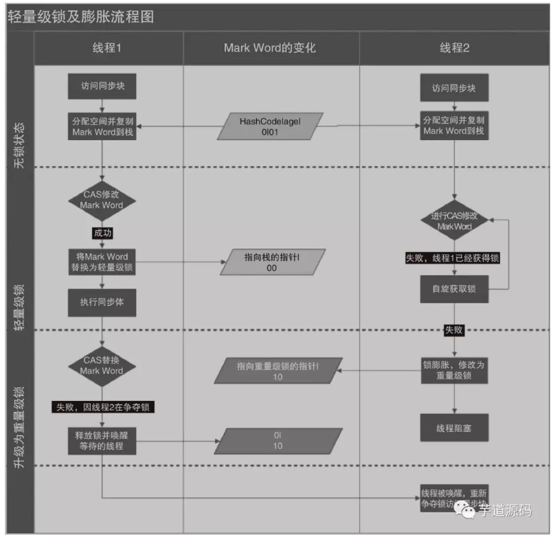
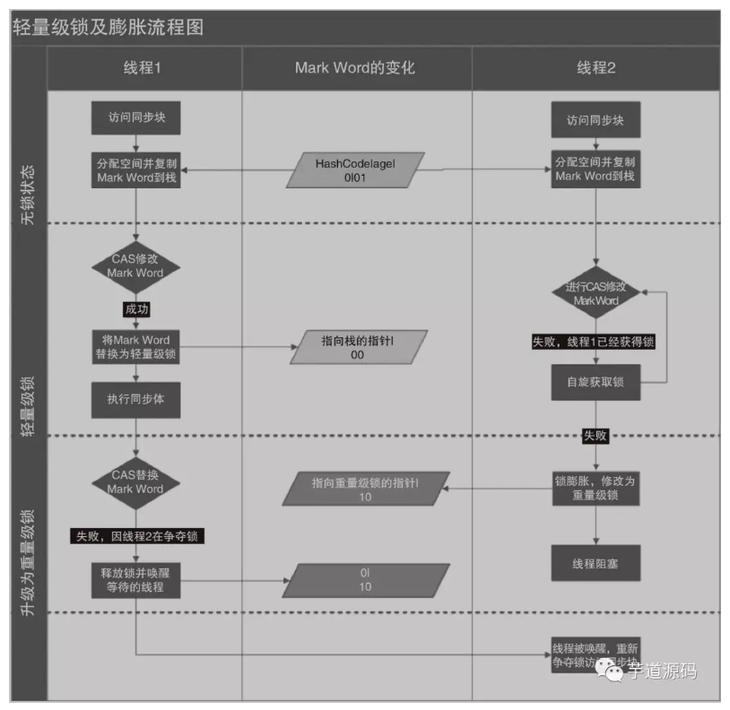
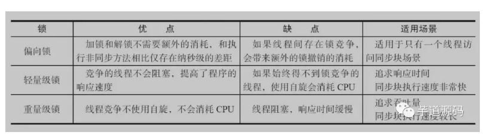
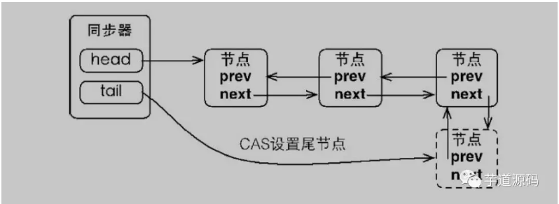
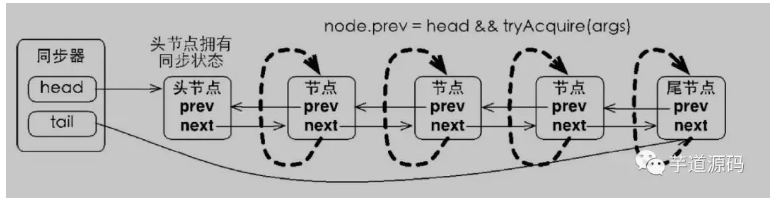
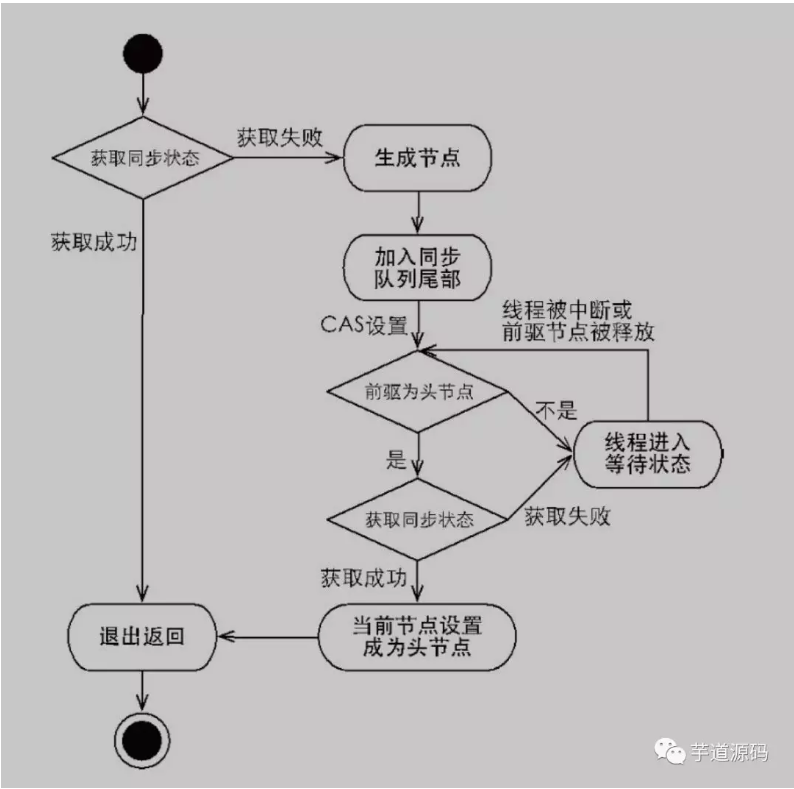

<!DOCTYPE html>


<html lang="zh-CN">


<head>
  <meta charset="utf-8" />
    
  <meta name="description" content="好记性不如烂笔头" />
  
  <meta name="viewport" content="width=device-width, initial-scale=1, maximum-scale=1" />
  <title>
    JAVA中的锁实现原理 |  奋斗的皮皮虾
  </title>
  <meta name="generator" content="hexo-theme-ayer">
  
  <link rel="shortcut icon" href="/images/avatar.jpg" />
  
  
<link rel="stylesheet" href="/dist/main.css">

  
<link rel="stylesheet" href="https://cdn.jsdelivr.net/gh/Shen-Yu/cdn/css/remixicon.min.css">

  
<link rel="stylesheet" href="/css/custom.css">

  
  
<script src="https://cdn.jsdelivr.net/npm/pace-js@1.0.2/pace.min.js"></script>

  
  

  

<link rel="alternate" href="/atom.xml" title="奋斗的皮皮虾" type="application/atom+xml">
</head>

</html>

<body>
  <div id="app">
    
      <canvas class="fireworks"></canvas>
      <style>
        .fireworks {
          position: fixed;
          left: 0;
          top: 0;
          z-index: 99999;
          pointer-events: none;
        }
      </style>
      
      
    <main class="content on">
      <section class="outer">
  <article
  id="post-JAVA中的锁实现原理"
  class="article article-type-post"
  itemscope
  itemprop="blogPost"
  data-scroll-reveal
>
  <div class="article-inner">
    
    <header class="article-header">
       
<h1 class="article-title sea-center" style="border-left:0" itemprop="name">
  JAVA中的锁实现原理
</h1>
 

    </header>
     
    <div class="article-meta">
      <a href="/2019/11/15/JAVA%E4%B8%AD%E7%9A%84%E9%94%81%E5%AE%9E%E7%8E%B0%E5%8E%9F%E7%90%86/" class="article-date">
  <time datetime="2019-11-15T15:30:58.000Z" itemprop="datePublished">2019-11-15</time>
</a> 
  <div class="article-category">
    <a class="article-category-link" href="/categories/Java%E5%9F%BA%E7%A1%80%E5%8E%9F%E7%90%86/">Java基础原理</a>
  </div>
  
<div class="word_count">
    <span class="post-time">
        <span class="post-meta-item-icon">
            <i class="ri-quill-pen-line"></i>
            <span class="post-meta-item-text"> 字数统计:</span>
            <span class="post-count">2.2k</span>
        </span>
    </span>

    <span class="post-time">
        &nbsp; | &nbsp;
        <span class="post-meta-item-icon">
            <i class="ri-book-open-line"></i>
            <span class="post-meta-item-text"> 阅读时长≈</span>
            <span class="post-count">7 分钟</span>
        </span>
    </span>
</div>
 
    </div>
      
    <div class="tocbot"></div>


  
    <div class="article-entry" itemprop="articleBody">
       
  <h1 id="JAVA中的锁实现原理"><a href="#JAVA中的锁实现原理" class="headerlink" title="JAVA中的锁实现原理"></a>JAVA中的锁实现原理</h1><ul>
<li><p>1、为什么要用锁？</p>
</li>
<li><p>2、锁实现的基本原理</p>
</li>
<li><ul>
<li>2.1、volatile</li>
<li>2.2、synchronized</li>
<li>2.3、CAS</li>
</ul>
</li>
<li><p>3、Java中的锁实现</p>
</li>
<li><ul>
<li>3.1、队列同步器（AQS）</li>
</ul>
</li>
<li><p>4、锁的使用用例</p>
</li>
<li><ul>
<li>4.1、ConcurrentHashMap的实现原理及使用</li>
</ul>
</li>
</ul>
<hr>
<h1 id="1、为什么要用锁？"><a href="#1、为什么要用锁？" class="headerlink" title="1、为什么要用锁？"></a>1、为什么要用锁？</h1><p>锁-是为了解决并发操作引起的脏读、数据不一致的问题。</p>
<h1 id="2、锁实现的基本原理"><a href="#2、锁实现的基本原理" class="headerlink" title="2、锁实现的基本原理"></a>2、锁实现的基本原理</h1><h2 id="2-1、volatile"><a href="#2-1、volatile" class="headerlink" title="2.1、volatile"></a>2.1、volatile</h2><blockquote>
<p>Java编程语言允许线程访问共享变量， 为了确保共享变量能被准确和一致地更新，线程应该确保通过排他锁单独获得这个变量。Java语言提供了volatile，在某些情况下比锁要更加方便。</p>
<p>volatile在多处理器开发中保证了共享变量的“ 可见性”。可见性的意思是当一个线程修改一个共享变量时，另外一个线程能读到这个修改的值。</p>
</blockquote>
<p></p>
<p>结论：如果volatile变量修饰符使用恰当的话，它比synchronized的使用和执行成本更低，因为它不会引起线程上下文的切换和调度。</p>
<h2 id="2-2、synchronized"><a href="#2-2、synchronized" class="headerlink" title="2.2、synchronized"></a>2.2、synchronized</h2><blockquote>
<p>synchronized通过锁机制实现同步。</p>
</blockquote>
<p>先来看下利用synchronized实现同步的基础：Java中的每一个对象都可以作为锁。</p>
<p>具体表现为以下3种形式。</p>
<ul>
<li>对于普通同步方法，锁是当前实例对象。</li>
<li>对于静态同步方法，锁是当前类的Class对象。</li>
<li>对于同步方法块，锁是Synchonized括号里配置的对象。</li>
</ul>
<p>当一个线程试图访问同步代码块时，它首先必须得到锁，退出或抛出异常时必须释放锁。</p>
<h3 id="2-2-1-synchronized实现原理"><a href="#2-2-1-synchronized实现原理" class="headerlink" title="2.2.1 synchronized实现原理"></a>2.2.1 synchronized实现原理</h3><blockquote>
<p>synchronized是基于Monitor来实现同步的。</p>
</blockquote>
<p>Monitor从两个方面来支持线程之间的同步：</p>
<ul>
<li>互斥执行</li>
<li>协作</li>
</ul>
<p>1、Java 使用对象锁 ( 使用 synchronized 获得对象锁 ) 保证工作在共享的数据集上的线程互斥执行。</p>
<p>2、使用 notify/notifyAll/wait 方法来协同不同线程之间的工作。</p>
<p>3、Class和Object都关联了一个Monitor。</p>
<p></p>
<p>Monitor 的工作机理</p>
<ul>
<li>线程进入同步方法中。</li>
<li>为了继续执行临界区代码，线程必须获取 Monitor 锁。如果获取锁成功，将成为该监视者对象的拥有者。任一时刻内，监视者对象只属于一个活动线程（The Owner）</li>
<li>拥有监视者对象的线程可以调用 wait() 进入等待集合（Wait Set），同时释放监视锁，进入等待状态。</li>
<li>其他线程调用 notify() / notifyAll() 接口唤醒等待集合中的线程，这些等待的线程需要<strong>重新获取监视锁后</strong>才能执行 wait() 之后的代码。</li>
<li>同步方法执行完毕了，线程退出临界区，并释放监视锁。</li>
</ul>
<p>参考文档：<a href="https://www.ibm.com/developerworks/cn/java/j-lo-synchronized" target="_blank" rel="noopener">https://www.ibm.com/developerworks/cn/java/j-lo-synchronized</a></p>
<h3 id="2-2-2-synchronized具体实现"><a href="#2-2-2-synchronized具体实现" class="headerlink" title="2.2.2 synchronized具体实现"></a>2.2.2 synchronized具体实现</h3><p>1、同步代码块采用monitorenter、monitorexit指令显式的实现。</p>
<p>2、同步方法则使用ACC_SYNCHRONIZED标记符隐式的实现。</p>
<p>通过实例来看看具体实现：</p>
<figure class="highlight java"><table><tr><td class="gutter"><pre><span class="line">1</span><br><span class="line">2</span><br><span class="line">3</span><br><span class="line">4</span><br><span class="line">5</span><br><span class="line">6</span><br><span class="line">7</span><br><span class="line">8</span><br><span class="line">9</span><br><span class="line">10</span><br></pre></td><td class="code"><pre><span class="line"><span class="keyword">public</span> <span class="class"><span class="keyword">class</span> <span class="title">SynchronizedTest</span> </span>&#123;   </span><br><span class="line">    <span class="function"><span class="keyword">public</span> <span class="keyword">synchronized</span> <span class="keyword">void</span> <span class="title">method1</span><span class="params">()</span></span>&#123;   </span><br><span class="line">        System.out.println(<span class="string">"Hello World!"</span>);   </span><br><span class="line">    &#125;    </span><br><span class="line">    <span class="function"><span class="keyword">public</span>  <span class="keyword">void</span> <span class="title">method2</span><span class="params">()</span></span>&#123;      </span><br><span class="line">        <span class="keyword">synchronized</span> (<span class="keyword">this</span>)&#123;        </span><br><span class="line">            System.out.println(<span class="string">"Hello World!"</span>);      </span><br><span class="line">        &#125;  </span><br><span class="line">    &#125;</span><br><span class="line">&#125;</span><br></pre></td></tr></table></figure>

<p>javap编译后的字节码如下：</p>
<p></p>
<p><strong>monitorenter</strong></p>
<p>每一个对象都有一个monitor，一个monitor只能被一个线程拥有。当一个线程执行到monitorenter指令时会尝试获取相应对象的monitor，获取规则如下：</p>
<ul>
<li>如果monitor的进入数为0，则该线程可以进入monitor，并将monitor进入数设置为1，该线程即为monitor的拥有者。</li>
<li>如果当前线程已经拥有该monitor，只是重新进入，则进入monitor的进入数加1，所以synchronized关键字实现的锁是可重入的锁。</li>
<li>如果monitor已被其他线程拥有，则当前线程进入阻塞状态，直到monitor的进入数为0，再重新尝试获取monitor。</li>
</ul>
<p><strong>monitorexit</strong></p>
<p>只有拥有相应对象的monitor的线程才能执行monitorexit指令。每执行一次该指令monitor进入数减1，当进入数为0时当前线程释放monitor，此时其他阻塞的线程将可以尝试获取该monitor。</p>
<h3 id="2-2-3-锁存放的位置"><a href="#2-2-3-锁存放的位置" class="headerlink" title="2.2.3 锁存放的位置"></a>2.2.3 锁存放的位置</h3><p> </p>
<h3 id="2-2-3-synchronized的锁优化"><a href="#2-2-3-synchronized的锁优化" class="headerlink" title="2.2.3 synchronized的锁优化"></a>2.2.3 synchronized的锁优化</h3><p>JavaSE1.6为了减少获得锁和释放锁带来的性能消耗，引入了“偏向锁”和“轻量级锁”。</p>
<p>在JavaSE1.6中，锁一共有4种状态，级别从低到高依次是：无锁状态、偏向锁状态、轻量级锁状态和重量级锁状态，这几个状态会随着竞争情况逐渐升级。</p>
<p>锁可以升级但不能降级，意味着偏向锁升级成轻量级锁后不能降级成偏向锁。这种锁升级却不能降级的策略，目的是为了提高获得锁和释放锁的效率。</p>
<h4 id="偏向锁："><a href="#偏向锁：" class="headerlink" title="偏向锁："></a>偏向锁：</h4><blockquote>
<p>无锁竞争的情况下为了减少锁竞争的资源开销，引入偏向锁。</p>
</blockquote>
<p></p>
<h4 id="轻量级锁："><a href="#轻量级锁：" class="headerlink" title="轻量级锁："></a>轻量级锁：</h4><blockquote>
<p>轻量级锁所适应的场景是线程交替执行同步块的情况。</p>
</blockquote>
<p></p>
<p><strong>锁粗化（Lock Coarsening）：</strong>也就是减少不必要的紧连在一起的unlock，lock操作，将多个连续的锁扩展成一个范围更大的锁。</p>
<p><strong>锁消除（Lock Elimination）：</strong>锁削除是指虚拟机即时编译器在运行时，对一些代码上要求同步，但是被检测到不可能存在共享数据竞争的锁进行削除。</p>
<p><strong>适应性自旋（Adaptive Spinning）：</strong>自适应意味着自旋的时间不再固定了，而是由前一次在同一个锁上的自旋时间及锁的拥有者的状态来决定。如果在同一个锁对象上，自旋等待刚刚成功获得过锁，并且持有锁的线程正在运行中，那么虚拟机就会认为这次自旋也很有可能再次成功，进而它将允许自旋等待持续相对更长的时间，比如100个循环。另一方面，如果对于某个锁，自旋很少成功获得过，那在以后要获取这个锁时将可能省略掉自旋过程，以避免浪费处理器资源。</p>
<h3 id="2-2-4-锁的优缺点对比"><a href="#2-2-4-锁的优缺点对比" class="headerlink" title="2.2.4 锁的优缺点对比"></a>2.2.4 锁的优缺点对比</h3><p></p>
<h2 id="2-3、CAS"><a href="#2-3、CAS" class="headerlink" title="2.3、CAS"></a>2.3、CAS</h2><blockquote>
<p>CAS，在Java并发应用中通常指CompareAndSwap或CompareAndSet，即比较并交换。</p>
</blockquote>
<p>1、CAS是一个原子操作，它比较一个内存位置的值并且只有相等时修改这个内存位置的值为新的值，保证了新的值总是基于最新的信息计算的，如果有其他线程在这期间修改了这个值则CAS失败。CAS返回是否成功或者内存位置原来的值用于判断是否CAS成功。</p>
<p>2、JVM中的CAS操作是利用了处理器提供的CMPXCHG指令实现的。</p>
<p>优点：</p>
<ul>
<li>竞争不大的时候系统开销小。</li>
</ul>
<p>缺点：</p>
<ul>
<li>循环时间长开销大。</li>
<li>ABA问题。</li>
<li>只能保证一个共享变量的原子操作。</li>
</ul>
<h1 id="3、Java中的锁实现"><a href="#3、Java中的锁实现" class="headerlink" title="3、Java中的锁实现"></a>3、Java中的锁实现</h1><h2 id="3-1、队列同步器（AQS）"><a href="#3-1、队列同步器（AQS）" class="headerlink" title="3.1、队列同步器（AQS）"></a>3.1、队列同步器（AQS）</h2><blockquote>
<p>队列同步器AbstractQueuedSynchronizer（以下简称同步器），是用来构建锁或者其他同步组件的基础框架。</p>
</blockquote>
<h3 id="3-1-1、它使用了一个int成员变量表示同步状态。"><a href="#3-1-1、它使用了一个int成员变量表示同步状态。" class="headerlink" title="3.1.1、它使用了一个int成员变量表示同步状态。"></a>3.1.1、它使用了一个int成员变量表示同步状态。</h3><p></p>
<h3 id="3-1-2、通过内置的FIFO双向队列来完成获取锁线程的排队工作。"><a href="#3-1-2、通过内置的FIFO双向队列来完成获取锁线程的排队工作。" class="headerlink" title="3.1.2、通过内置的FIFO双向队列来完成获取锁线程的排队工作。"></a>3.1.2、通过内置的FIFO双向队列来完成获取锁线程的排队工作。</h3><ul>
<li><p>同步器包含两个节点类型的应用，一个指向头节点，一个指向尾节点，未获取到锁的线程会创建节点线程安全（compareAndSetTail）的加入队列尾部。同步队列遵循FIFO，首节点是获取同步状态成功的节点。</p>
<p></p>
</li>
<li><p>未获取到锁的线程将创建一个节点，设置到尾节点。如下图所示：</p>
</li>
</ul>
<p></p>
<ul>
<li><p>首节点的线程在释放锁时，将会唤醒后继节点。而后继节点将会在获取锁成功时将自己设置为首节点。如下图所示：</p>
<p></p>
</li>
</ul>
<h3 id="3-1-3、独占式-共享式锁获取"><a href="#3-1-3、独占式-共享式锁获取" class="headerlink" title="3.1.3、独占式/共享式锁获取"></a>3.1.3、独占式/共享式锁获取</h3><blockquote>
<p>独占式：有且只有一个线程能获取到锁，如：ReentrantLock。</p>
<p>共享式：可以多个线程同时获取到锁，如：CountDownLatch</p>
</blockquote>
<h4 id="独占式"><a href="#独占式" class="headerlink" title="独占式"></a>独占式</h4><ul>
<li><p>每个节点自旋观察自己的前一节点是不是Header节点，如果是，就去尝试获取锁。</p>
<p></p>
</li>
<li><p>独占式锁获取流程：</p>
</li>
</ul>
<p></p>
<h4 id="共享式："><a href="#共享式：" class="headerlink" title="共享式："></a>共享式：</h4><ul>
<li><p>共享式与独占式的区别：</p>
<p></p>
</li>
<li><p>共享锁获取流程：</p>
</li>
</ul>
<p></p>
<h1 id="4、锁的使用用例"><a href="#4、锁的使用用例" class="headerlink" title="4、锁的使用用例"></a>4、锁的使用用例</h1><h2 id="4-1、ConcurrentHashMap的实现原理及使用"><a href="#4-1、ConcurrentHashMap的实现原理及使用" class="headerlink" title="4.1、ConcurrentHashMap的实现原理及使用"></a>4.1、ConcurrentHashMap的实现原理及使用</h2><p>ConcurrentHashMap类图</p>
<p>ConcurrentHashMap数据结构</p>
<p>结论：ConcurrentHashMap使用的锁分段技术。首先将数据分成一段一段地存储，然后给每一段数据配一把锁，当一个线程占用锁访问其中一个段数据的时候，其他段的数据也能被其他线程访问。</p>
<p>转载至： 微信公众号 <strong>芋艿源码</strong>。</p>
 
      <!-- reward -->
      
      <div id="reward-btn">
        打赏
      </div>
      
    </div>
    

    <!-- copyright -->
    
    <div class="declare">
      <ul class="post-copyright">
        <li>
          <i class="ri-copyright-line"></i>
          <strong>版权声明： </strong>
          本博客所有文章除特别声明外，著作权归作者所有。转载请注明出处！
        </li>
      </ul>
    </div>
    
    <footer class="article-footer">
       
<div class="share-btn">
      <span class="share-sns share-outer">
        <i class="ri-share-forward-line"></i>
        分享
      </span>
      <div class="share-wrap">
        <i class="arrow"></i>
        <div class="share-icons">
          
          <a class="weibo share-sns" href="javascript:;" data-type="weibo">
            <i class="ri-weibo-fill"></i>
          </a>
          <a class="weixin share-sns wxFab" href="javascript:;" data-type="weixin">
            <i class="ri-wechat-fill"></i>
          </a>
          <a class="qq share-sns" href="javascript:;" data-type="qq">
            <i class="ri-qq-fill"></i>
          </a>
          <a class="douban share-sns" href="javascript:;" data-type="douban">
            <i class="ri-douban-line"></i>
          </a>
          <!-- <a class="qzone share-sns" href="javascript:;" data-type="qzone">
            <i class="icon icon-qzone"></i>
          </a> -->
          
          <a class="facebook share-sns" href="javascript:;" data-type="facebook">
            <i class="ri-facebook-circle-fill"></i>
          </a>
          <a class="twitter share-sns" href="javascript:;" data-type="twitter">
            <i class="ri-twitter-fill"></i>
          </a>
          <a class="google share-sns" href="javascript:;" data-type="google">
            <i class="ri-google-fill"></i>
          </a>
        </div>
      </div>
</div>

<div class="wx-share-modal">
    <a class="modal-close" href="javascript:;"><i class="ri-close-circle-line"></i></a>
    <p>扫一扫，分享到微信</p>
    <div class="wx-qrcode">
      
    </div>
</div>

<div id="share-mask"></div>  
  <ul class="article-tag-list" itemprop="keywords"><li class="article-tag-list-item"><a class="article-tag-list-link" href="/tags/sync%E9%94%81%E5%AE%9E%E7%8E%B0%E5%8E%9F%E7%90%86/" rel="tag">sync锁实现原理</a></li></ul>

    </footer>
  </div>

   
  <nav class="article-nav">
    
      <a href="/2019/11/17/%E5%9E%83%E5%9C%BE%E5%9B%9E%E6%94%B6%E7%AE%97%E6%B3%95%E5%8F%8A%E5%88%86%E4%BB%A3%E5%9E%83%E5%9C%BE%E6%94%B6%E9%9B%86%E5%99%A8/" class="article-nav-link">
        <strong class="article-nav-caption">上一篇</strong>
        <div class="article-nav-title">
          
            垃圾回收算法及分代垃圾收集器
          
        </div>
      </a>
    
    
      <a href="/2019/11/05/Zookeeper%E7%9A%84ZAB%E5%8D%8F%E8%AE%AE/" class="article-nav-link">
        <strong class="article-nav-caption">下一篇</strong>
        <div class="article-nav-title">Zookeeper的ZAB协议</div>
      </a>
    
  </nav>

   
<!-- valine评论 -->
<div id="vcomments-box">
  <div id="vcomments"></div>
</div>
<script src="//cdn1.lncld.net/static/js/3.0.4/av-min.js"></script>
<script src="https://cdn.jsdelivr.net/npm/valine@1.4.14/dist/Valine.min.js"></script>
<script>
  new Valine({
    el: "#vcomments",
    app_id: "SctsT8yefP0D7VSA3skojjQJ-gzGzoHsz",
    app_key: "m5U9PA8tUiK3NJFScBqsQ8pg",
    path: window.location.pathname,
    avatar: "mp",
    placeholder: "给我的文章加点评论吧~",
    recordIP: true,
  });
  const infoEle = document.querySelector("#vcomments .info");
  if (infoEle && infoEle.childNodes && infoEle.childNodes.length > 0) {
    infoEle.childNodes.forEach(function (item) {
      item.parentNode.removeChild(item);
    });
  }
</script>
<style>
  #vcomments-box {
    padding: 5px 30px;
  }

  @media screen and (max-width: 800px) {
    #vcomments-box {
      padding: 5px 0px;
    }
  }

  #vcomments-box #vcomments {
    background-color: #fff;
  }

  .v .vlist .vcard .vh {
    padding-right: 20px;
  }

  .v .vlist .vcard {
    padding-left: 10px;
  }
</style>

 
     
</article>

</section>
      <footer class="footer">
  <div class="outer">
    <ul>
      <li>
        Copyrights &copy;
        2019-2020
        <i class="ri-heart-fill heart_icon"></i> 张朝阳
      </li>
    </ul>
    <ul>
      <li>
        
        
        
        由 <a href="https://hexo.io" target="_blank">Hexo</a> 强力驱动
        <span class="division">|</span>
        主题 - <a href="https://github.com/Shen-Yu/hexo-theme-ayer" target="_blank">Ayer</a>
        
      </li>
    </ul>
    <ul>
      <li>
        
        
        <span>
  <span><i class="ri-user-3-fill"></i>访问人数:<span id="busuanzi_value_site_uv"></span></s>
  <span class="division">|</span>
  <span><i class="ri-eye-fill"></i>浏览次数:<span id="busuanzi_value_page_pv"></span></span>
</span>
        
      </li>
    </ul>
    <ul>
      
    </ul>
    <ul>
      <li>
        <!-- cnzz统计 -->
        
        <script type="text/javascript" src=''></script>
        
      </li>
    </ul>
  </div>
</footer>
      <div class="float_btns">
        <div class="totop" id="totop">
  <i class="ri-arrow-up-line"></i>
</div>

<div class="todark" id="todark">
  <i class="ri-moon-line"></i>
</div>

      </div>
    </main>
    <aside class="sidebar on">
      <button class="navbar-toggle"></button>
<nav class="navbar">
  
  <div class="logo">
    <a href="/"></a>
  </div>
  
  <ul class="nav nav-main">
    
    <li class="nav-item">
      <a class="nav-item-link" href="/">主页</a>
    </li>
    
    <li class="nav-item">
      <a class="nav-item-link" href="/archives">归档</a>
    </li>
    
    <li class="nav-item">
      <a class="nav-item-link" href="/categories">分类</a>
    </li>
    
    <li class="nav-item">
      <a class="nav-item-link" href="/tags">标签</a>
    </li>
    
    <li class="nav-item">
      <a class="nav-item-link" href="http://shenyu-vip.lofter.com" target="_blank" rel="noopener">摄影</a>
    </li>
    
    <li class="nav-item">
      <a class="nav-item-link" href="/tags/%E6%97%85%E8%A1%8C/">旅行</a>
    </li>
    
    <li class="nav-item">
      <a class="nav-item-link" href="/2019/about">关于我</a>
    </li>
    
  </ul>
</nav>
<nav class="navbar navbar-bottom">
  <ul class="nav">
    <li class="nav-item">
      
      <a class="nav-item-link nav-item-search"  title="搜索">
        <i class="ri-search-line"></i>
      </a>
      
      
      <a class="nav-item-link" target="_blank" href="/atom.xml" title="RSS Feed">
        <i class="ri-rss-line"></i>
      </a>
      
    </li>
  </ul>
</nav>
<div class="search-form-wrap">
  <div class="local-search local-search-plugin">
  <input type="search" id="local-search-input" class="local-search-input" placeholder="Search...">
  <div id="local-search-result" class="local-search-result"></div>
</div>
</div>
    </aside>
    <script>
      if (window.matchMedia("(max-width: 768px)").matches) {
        document.querySelector('.content').classList.remove('on');
        document.querySelector('.sidebar').classList.remove('on');
      }
    </script>
    <div id="mask"></div>

<!-- #reward -->
<div id="reward">
  <span class="close"><i class="ri-close-line"></i></span>
  <p class="reward-p"><i class="ri-cup-line"></i>请我喝杯咖啡吧~</p>
  <div class="reward-box">
    
    <div class="reward-item">
      
      <span class="reward-type">支付宝</span>
    </div>
    
    
    <div class="reward-item">
      
      <span class="reward-type">微信</span>
    </div>
    
  </div>
</div>
    
<script src="/js/jquery-2.0.3.min.js"></script>


<script src="/js/lazyload.min.js"></script>

<!-- Subtitle -->

<!-- Tocbot -->


<script src="/js/tocbot.min.js"></script>

<script>
  tocbot.init({
    tocSelector: '.tocbot',
    contentSelector: '.article-entry',
    headingSelector: 'h1, h2, h3, h4, h5, h6',
    hasInnerContainers: true,
    scrollSmooth: true,
    scrollContainer: 'main',
    positionFixedSelector: '.tocbot',
    positionFixedClass: 'is-position-fixed',
    fixedSidebarOffset: 'auto'
  });
</script>

<script src="https://cdn.jsdelivr.net/npm/jquery-modal@0.9.2/jquery.modal.min.js"></script>
<link rel="stylesheet" href="https://cdn.jsdelivr.net/npm/jquery-modal@0.9.2/jquery.modal.min.css">
<script src="https://cdn.jsdelivr.net/npm/justifiedGallery@3.7.0/dist/js/jquery.justifiedGallery.min.js"></script>

<script src="/dist/main.js"></script>

<!-- ImageViewer -->

<!-- Root element of PhotoSwipe. Must have class pswp. -->
<div class="pswp" tabindex="-1" role="dialog" aria-hidden="true">

    <!-- Background of PhotoSwipe. 
         It's a separate element as animating opacity is faster than rgba(). -->
    <div class="pswp__bg"></div>

    <!-- Slides wrapper with overflow:hidden. -->
    <div class="pswp__scroll-wrap">

        <!-- Container that holds slides. 
            PhotoSwipe keeps only 3 of them in the DOM to save memory.
            Don't modify these 3 pswp__item elements, data is added later on. -->
        <div class="pswp__container">
            <div class="pswp__item"></div>
            <div class="pswp__item"></div>
            <div class="pswp__item"></div>
        </div>

        <!-- Default (PhotoSwipeUI_Default) interface on top of sliding area. Can be changed. -->
        <div class="pswp__ui pswp__ui--hidden">

            <div class="pswp__top-bar">

                <!--  Controls are self-explanatory. Order can be changed. -->

                <div class="pswp__counter"></div>

                <button class="pswp__button pswp__button--close" title="Close (Esc)"></button>

                <button class="pswp__button pswp__button--share" style="display:none" title="Share"></button>

                <button class="pswp__button pswp__button--fs" title="Toggle fullscreen"></button>

                <button class="pswp__button pswp__button--zoom" title="Zoom in/out"></button>

                <!-- Preloader demo http://codepen.io/dimsemenov/pen/yyBWoR -->
                <!-- element will get class pswp__preloader--active when preloader is running -->
                <div class="pswp__preloader">
                    <div class="pswp__preloader__icn">
                        <div class="pswp__preloader__cut">
                            <div class="pswp__preloader__donut"></div>
                        </div>
                    </div>
                </div>
            </div>

            <div class="pswp__share-modal pswp__share-modal--hidden pswp__single-tap">
                <div class="pswp__share-tooltip"></div>
            </div>

            <button class="pswp__button pswp__button--arrow--left" title="Previous (arrow left)">
            </button>

            <button class="pswp__button pswp__button--arrow--right" title="Next (arrow right)">
            </button>

            <div class="pswp__caption">
                <div class="pswp__caption__center"></div>
            </div>

        </div>

    </div>

</div>

<link rel="stylesheet" href="https://cdn.jsdelivr.net/npm/photoswipe@4.1.3/dist/photoswipe.min.css">
<link rel="stylesheet" href="https://cdn.jsdelivr.net/npm/photoswipe@4.1.3/dist/default-skin/default-skin.min.css">
<script src="https://cdn.jsdelivr.net/npm/photoswipe@4.1.3/dist/photoswipe.min.js"></script>
<script src="https://cdn.jsdelivr.net/npm/photoswipe@4.1.3/dist/photoswipe-ui-default.min.js"></script>

<script>
    function viewer_init() {
        let pswpElement = document.querySelectorAll('.pswp')[0];
        let $imgArr = document.querySelectorAll(('.article-entry img:not(.reward-img)'))

        $imgArr.forEach(($em, i) => {
            $em.onclick = () => {
                // slider展开状态
                // todo: 这样不好，后面改成状态
                if (document.querySelector('.left-col.show')) return
                let items = []
                $imgArr.forEach(($em2, i2) => {
                    let img = $em2.getAttribute('data-idx', i2)
                    let src = $em2.getAttribute('data-target') || $em2.getAttribute('src')
                    let title = $em2.getAttribute('alt')
                    // 获得原图尺寸
                    const image = new Image()
                    image.src = src
                    items.push({
                        src: src,
                        w: image.width || $em2.width,
                        h: image.height || $em2.height,
                        title: title
                    })
                })
                var gallery = new PhotoSwipe(pswpElement, PhotoSwipeUI_Default, items, {
                    index: parseInt(i)
                });
                gallery.init()
            }
        })
    }
    viewer_init()
</script>

<!-- MathJax -->

<script type="text/x-mathjax-config">
  MathJax.Hub.Config({
      tex2jax: {
          inlineMath: [ ['$','$'], ["\\(","\\)"]  ],
          processEscapes: true,
          skipTags: ['script', 'noscript', 'style', 'textarea', 'pre', 'code']
      }
  });

  MathJax.Hub.Queue(function() {
      var all = MathJax.Hub.getAllJax(), i;
      for(i=0; i < all.length; i += 1) {
          all[i].SourceElement().parentNode.className += ' has-jax';
      }
  });
</script>

<script src="https://cdn.jsdelivr.net/npm/mathjax@2.7.6/unpacked/MathJax.js?config=TeX-AMS-MML_HTMLorMML"></script>
<script>
  var ayerConfig = {
    mathjax: true
  }
</script>

<!-- Katex -->

<!-- busuanzi  -->


<script src="/js/busuanzi-2.3.pure.min.js"></script>


<!-- ClickLove -->

<!-- ClickBoom1 -->

<script src="https://cdn.jsdelivr.net/npm/animejs@latest/anime.min.js"></script>

<script src="/js/clickBoom1.js"></script>


<!-- ClickBoom2 -->

<!-- CodeCopy -->


<link rel="stylesheet" href="/css/clipboard.css">

<script src="https://cdn.jsdelivr.net/npm/clipboard@2/dist/clipboard.min.js"></script>
<script>
  function wait(callback, seconds) {
    var timelag = null;
    timelag = window.setTimeout(callback, seconds);
  }
  !function (e, t, a) {
    var initCopyCode = function(){
      var copyHtml = '';
      copyHtml += '<button class="btn-copy" data-clipboard-snippet="">';
      copyHtml += '<i class="ri-file-copy-2-line"></i><span>COPY</span>';
      copyHtml += '</button>';
      $(".highlight .code pre").before(copyHtml);
      $(".article pre code").before(copyHtml);
      var clipboard = new ClipboardJS('.btn-copy', {
        target: function(trigger) {
          return trigger.nextElementSibling;
        }
      });
      clipboard.on('success', function(e) {
        let $btn = $(e.trigger);
        $btn.addClass('copied');
        let $icon = $($btn.find('i'));
        $icon.removeClass('ri-file-copy-2-line');
        $icon.addClass('ri-checkbox-circle-line');
        let $span = $($btn.find('span'));
        $span[0].innerText = 'COPIED';
        
        wait(function () { // 等待两秒钟后恢复
          $icon.removeClass('ri-checkbox-circle-line');
          $icon.addClass('ri-file-copy-2-line');
          $span[0].innerText = 'COPY';
        }, 2000);
      });
      clipboard.on('error', function(e) {
        e.clearSelection();
        let $btn = $(e.trigger);
        $btn.addClass('copy-failed');
        let $icon = $($btn.find('i'));
        $icon.removeClass('ri-file-copy-2-line');
        $icon.addClass('ri-time-line');
        let $span = $($btn.find('span'));
        $span[0].innerText = 'COPY FAILED';
        
        wait(function () { // 等待两秒钟后恢复
          $icon.removeClass('ri-time-line');
          $icon.addClass('ri-file-copy-2-line');
          $span[0].innerText = 'COPY';
        }, 2000);
      });
    }
    initCopyCode();
  }(window, document);
</script>


<!-- CanvasBackground -->


    
    <div id="music">
    
    
    
    <iframe frameborder="no" border="1" marginwidth="0" marginheight="0" width="200" height="86"
        src="//music.163.com/outchain/player?type=2&id=37653063&auto=1&height=66"></iframe>
</div>

<style>
    #music {
        position: fixed;
        right: 15px;
        bottom: 0;
        z-index: 998;
    }
</style>
    
  </div>
</body>

</html>